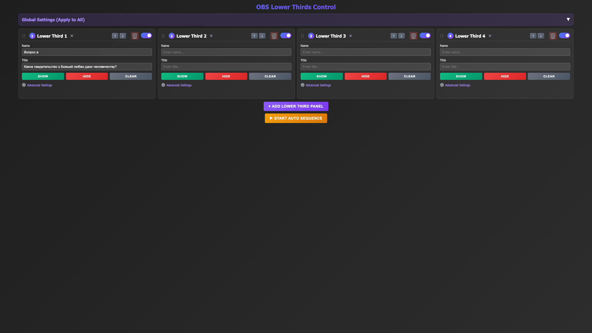
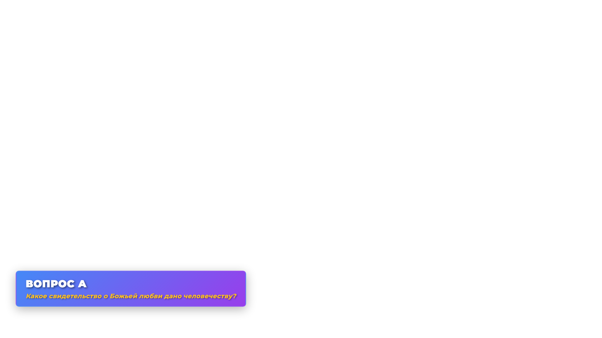
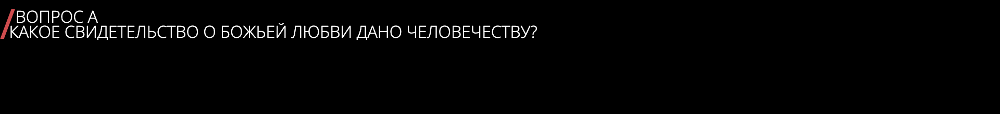
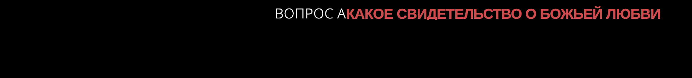
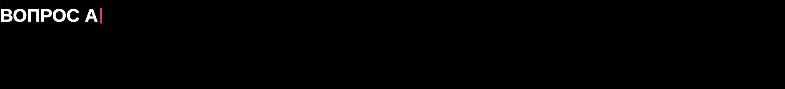
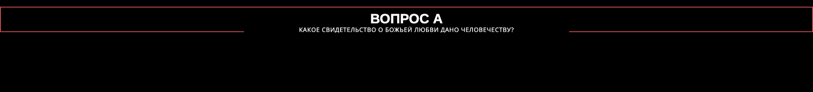

Тестовый стенд плашек для трансляции
Место, где собраны все варианты плашек — пробуйте каждый, сравнивайте, добавляйте новые по мере поиска.
⚠️ Браузер ≠ OBS
То, что видно здесь в обычном браузере (Chrome/Safari), — не гарантия того же вида внутри OBS.
OBS рендерит Browser Source через свой встроенный движок (CEF), у которого свои версии шрифтов
и возможны отличия в отступах/размерах. Открыть здесь для приблизительной проверки текста и логики
можно, но финальный вид всегда проверяйте, добавив файл как настоящий Browser Source в самом OBS
— только так видно то, что увидят зрители на трансляции.
План 1 — Animated Lower Thirds панель работает на Mac
control-panel.htmlпанель управления — тексты, тайминги, логотип
browser-source.htmlсама плашка — это добавляют в OBS как Browser Source
- Откройте обе ссылки в двух вкладках одного браузера
- В панели включите верхний тумблер Main settings — без него все слоты принудительно выключены
- Впишите текст в слот 1 (текстовые поля под логотипом), включите переключатель слота — плашка появится во второй вкладке
Вид: тёмная лента, логотип слева, вертикальная цветная черта-разделитель. Полностью офлайн — ничего не тянет из интернета.


План 2 — Ultimate OBS Lower Thirds System нужен интернет
- Откройте обе ссылки в двух вкладках
- В панели впишите текст в поля Name/Info слота 1, нажмите его кнопку Show
Вид: сине-фиолетовый градиент, компактная карточка, эффект печатной машинки. Тянет jQuery и шрифты с внешних серверов — без интернета на эфире может показаться без шрифтов.


План 3 — infor-r Lower Thirds офлайн, без панели
- Не нужна вторая вкладка-панель: весь текст задаётся прямо в ссылке —
?id=1&line1=...&line2=...&color1=fff&color2=cf4c4e - Меняете текст урока — меняете URL в свойствах Browser Source в OBS, ничего больше настраивать не нужно
- Есть Lua-скрипт (
OBS_InforR-Lower/scripts/lower-thirds-read-file.lua) для переключения вопросов по хоткею из текстового файла — см. LOCAL-SETUP.md
Вид: тот самый дизайн с CodePen mattchestnut/dMrONe, который изначально просили взять за референс. Фон сплошной чёрный (не CSS-прозрачность) — в OBS прозрачность достигается фильтром Chroma Key поверх чёрного, как и в Планах 1/2.




План 4 — здесь появится следующий вариант, как только найдём и добавим